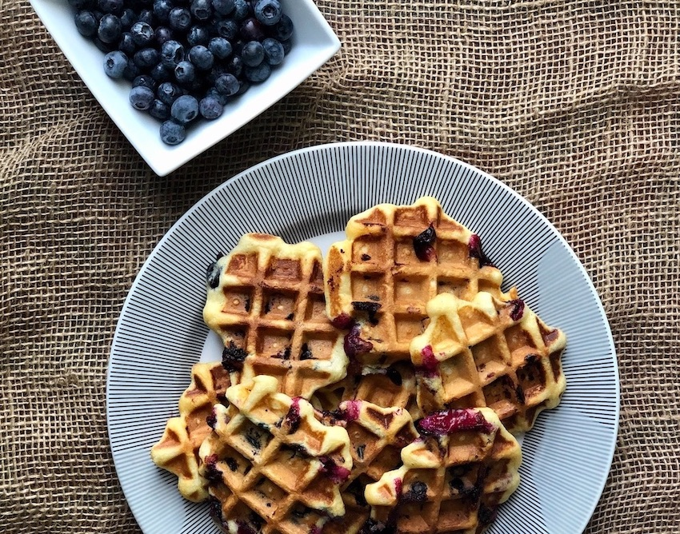

Oatmeal Waffles

Description:
These blueberry oatmeal waffles are to die for. Please give them a go!
Ingredients:
- 1⅓ cups all-purpose flour
- ⅔ cup quick-cooking or old-fashioned oatmeal, uncooked
- 2 tablespoons sugar
- 2½ teaspoons baking powder
- ½ teaspoon salt
- 1 egg
- 1⅓ cups 2% to whole milk (buttermilk works here too -- If the buttermilk is extra thick, I add a little more to thin out the batter)
- 3 tablespoons melted butter
- large handful of fresh blueberries
- oil or butter, to brush pan
Steps:
- In a large bowl, stir together flour, oatmeal, sugar, baking powder, and salt. Set aside.
- In a separate, smaller bowl, beat eggs, then beat in milk and melted butter.
- Add the milk mixture into the dry mixture and stir until just combined. Allow to sit for 5 minutes.
- Stir in blueberries gently.
- Meanwhile, heat up your waffle iron. When hot enough, grease with a bit of butter/oil. Pour/plop batter onto pan (how much at a time will depend on the size of your pan), close lid, and bake according to timer.
- Serve with extra butter and without syrup. Buuuut, if you really have to, use the syrup.